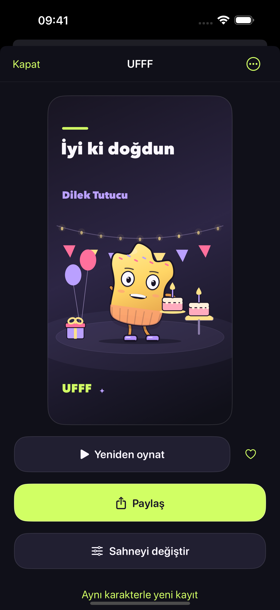
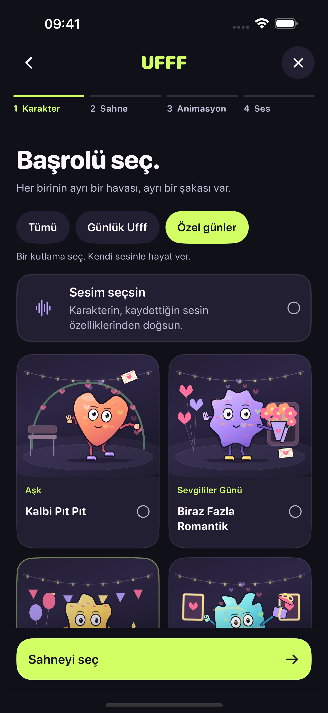

Küçük bir ses. Büyük bir karakter.
İçinden
geldiği gibi.
Ufff’la.
Bir iç çekiş, komik bir cümle, minicik bir dilek. Sesine bir başrol ver; kendi küçük çizgi filmini yap.
Yakında App Store’da

Sahne senin
Dört seçim.
Bir sürü küçük drama.
Karakter → Sahne → Animasyon → Ses kaydı. Sonra? Önizle, gülümse, paylaş.
Karakterini seç.
18 farklı karakterden biri sesinin yeni yüzü olsun.
Sahneyi kur.
14 sahne arasından küçük filminin dünyasını seç.
Harekete geçir.
18 animasyondan biriyle hikâyeye biraz hareket kat.
Sesini bırak.
5–8 saniyelik bir kayıt öneririz. Son dokunuş önizlemede.

Biraz tuhaf. Çok sen.
Her sesin
bir karakteri var.
Utangaç bir merhaba, kocaman bir ufff, fazlasıyla dramatik bir gün. İstediğin karakteri seç; kaydının ritmiyle canlansın.
- 18 karakter
- Doğal, ince ve kalın ses
- Yerel ikili sahne
Bir bahaneye gerek yok
Ama kutlanacak
bir şey varsa…
Bir “seni seviyorum”u, doğum günü dileğini ya da sıradan bir salı gününü küçük bir gösteriye çevir.
- Aşk
- Sevgililer Günü
- Doğum günü
- Yıl dönümü
- Kutlama
- Sadece canın istedi
Önce bir tanışın
İlk 3 yaratık
bizden.
Üç başarılı oluşturma ücretsiz. Sonrasında UFFF Forever ile tek seferlik satın alma yaparak sınırsız yeni yaratık oluştur.
Abonelik yok. Eski yaratıkların kilitlenmez.
Üç hakkın bittiğinde yeni oluşturma için satın alma gerekir. İptal edilen veya başarısız kayıtlar hak tüketmez. Güncel ücret satın alma ekranında gösterilir.
Satın alma sorularıSesin, senin iPhone’unda.
Kayıtlar cihazında işlenir. UFFF hesabı, reklam veya bulut yapay zekâ yok. Paylaşmak istediğinde kararı sen verirsin.
Gizliliği nasıl koruyoruz?